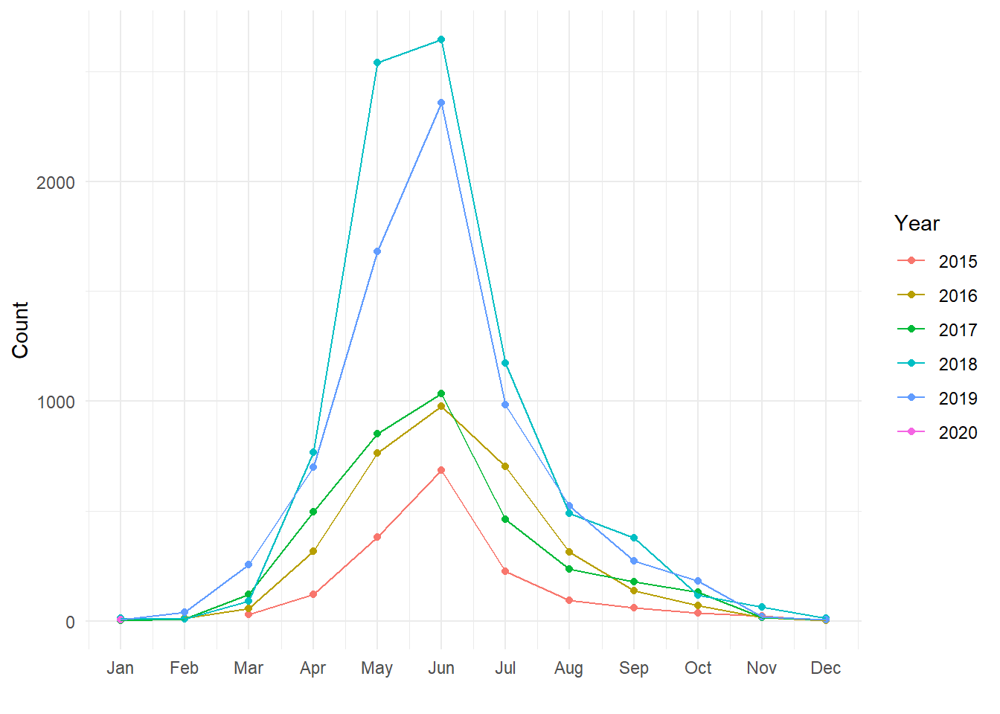
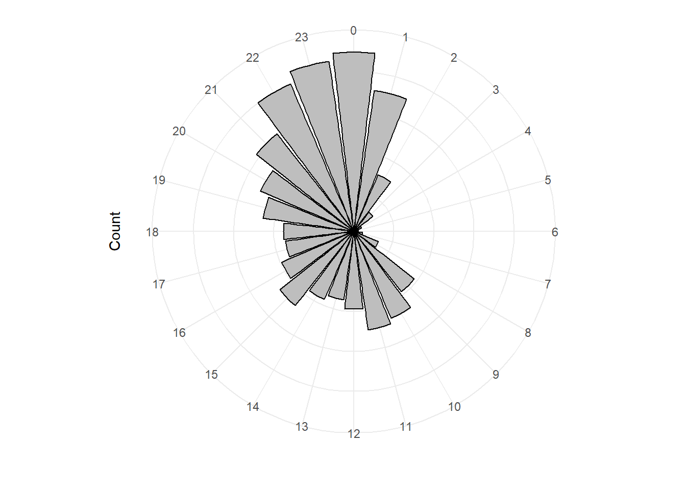
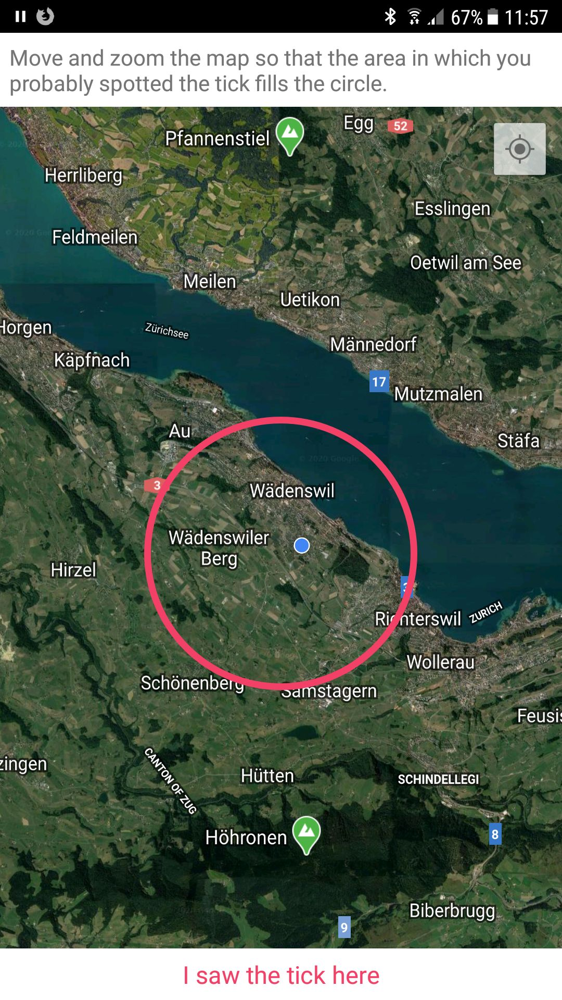
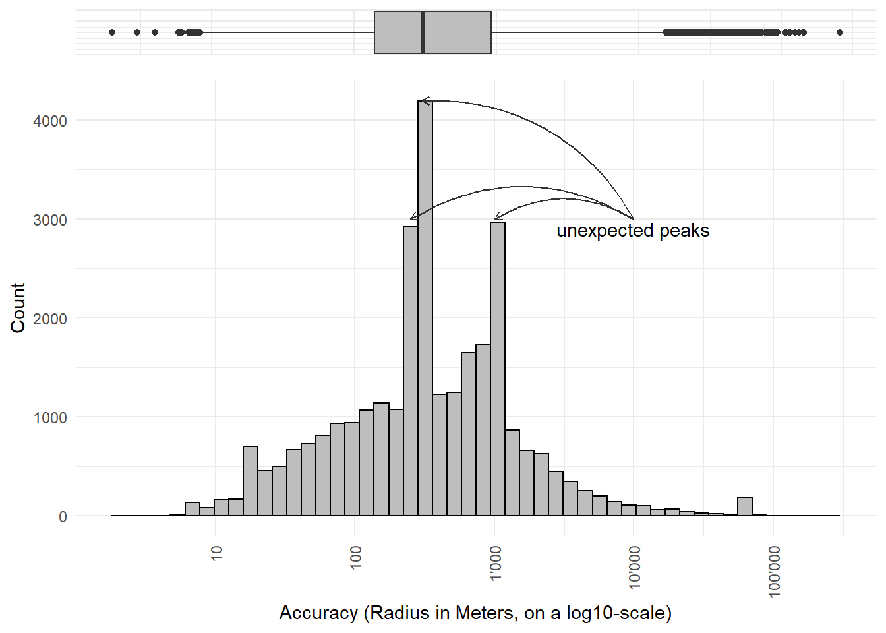
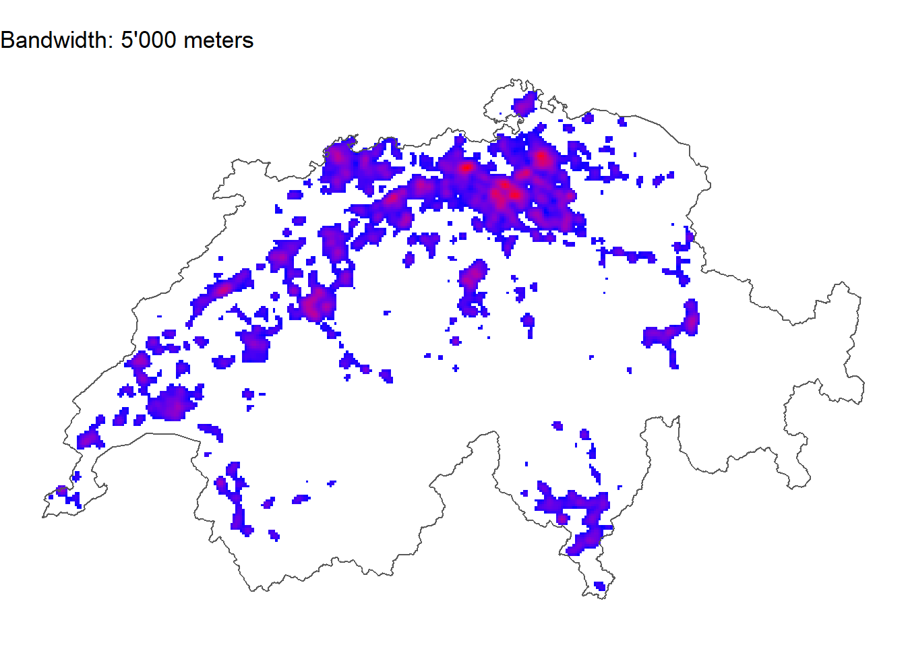

OpenGeoHub 2023 DataChallenge
A proposal für the OpenGeoHub Summerschool 2023 Data Challenge
Abstract
The tick prevention app “tick” is a mobile application that provides information on tick prevention and tick bite risk. The user is able to enter tick bites in a diary and is reminded to check for possible disease symptoms. Additionally, the user can enter the location of where the tick bite took place on a map, thus helping to identify tick hotspots. More information can be found here.
In this manner, over 50k tick bites were collected over a period of several years. This data can be used to identify tick hotspots and to predict tick bite risk based on environmental factors. We have a list of variables that experts think are important for predicting tick bite risk. We want to use machine learning to find out which variables are actually important and to predict tick bite risk for a given location. The goal is to create a model which outperforms the existing expert-based model.
Introduction
Ticks are small arachnids that feed on the blood of mammals, birds and reptiles. Ticks are vectors for several diseases, including Lyme disease, tick-borne encephalitis, babesiosis and anaplasmosis. In Switzerland, tick bites are a common phenomenon. In 2019, 3.1% of the population was infected with Lyme disease. The tick prevention app “tick” was developed by the Institute for Natural Resource Sciences of the Zürcher Hochschule für Angewandte Wissenschaften (ZHAW) in 2015. The app is available for android and ios and provides information on tick prevention and tick bite risk. The user is able to enter tick bites in a diary and is reminded to check for possible disease symptoms. Additionally, the user can enter the location of where the tick bite took place on a map, thus helping to identify tick hotspots. More information can be found here.
In this manner, over 50k tick bites were collected over a period of several years. This data can be used to identify tick hotspots and to predict tick bite risk based on environmental factors. We have a list of variables that experts think are important for predicting tick bite risk. We want to use machine learning to find out which variables are actually important and to predict tick bite risk for a given location. The goal is to create model which outperforms the existing expert-based model.
For this, we have the following data available:
- Dependent variable: Tick bite data (tick bites recorded by users of the tick app)
- Predictors: Geodata (raster data from various sources)
Dependent variable: Tick data
Temporal dimension
Every year, the number of users using the app continues to grow and thus the number of recorded tick bites grows rapidly. Here are some figures showing the data from 2015 to 2019. More recent data can be acquired easily.


Spatial accuracy
When specifying the location where the tick bite occurred, the user has the possibility to zoom into the map very closely (see Figure 2 (a)). The higher the zoom level the user chooses, the smaller the radius of the red circle. This radius can be used as a proxy of the accuracy of the user’s knowledge of where the tick bite occurred. The distribution of the accuracies is approximately log normal, see Figure 2 (b). Different versions of the app have different default values for accuracy. These default values are the peaks visible in Figure 2 (b).


Risk, hazard and exposure
The risk of getting bitten by a tick can be formalized as follows:
\[\text{Risk} = \text{Hazard} \times \text{Exposure}\]
This means that the risk is higher for areas not only where the Hazard is higher (i.e. more ticks), but also where Exposure is higher, i.e. more people. In other words, we must correct our data for population before making any predictions about the occurrence of ticks, as Figure 3 shows. If you are not familiar with swiss geography, the hotspots of tick bites are clearly around major cities like Zurich, Bern etc.


Predictors: Geodata
Based on expert knowledge, we have selected and prepared a number of possible datasets that can be used to predict tick occurrence.
- Land use statistics: A raster dataset with a 100m resolution with 72 basic categories
- Population: A raster dataset with 100m resolution with population count
- Vegetation Height: A raster dataset with 50cm resolution describing the height of the vegetation in meters.
- Digital Elevation Model: A raster dataset with 50cm resolution describing elevation
As an extra challenge, participants could use historic temperature and precipitation data to create a dynamic, spatiotemporal forecast model. Historic weather data is available on various temporal scales (daily, weeekly, mothly…) at a high sptial resolution.